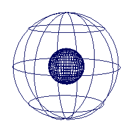
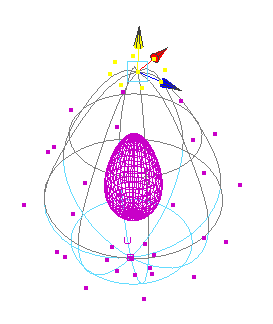
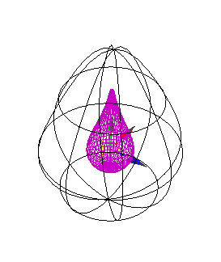
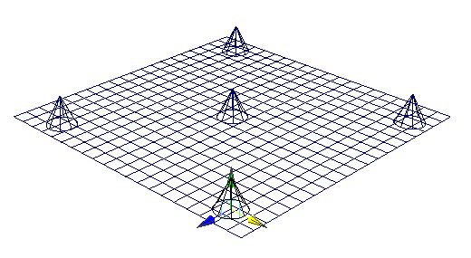
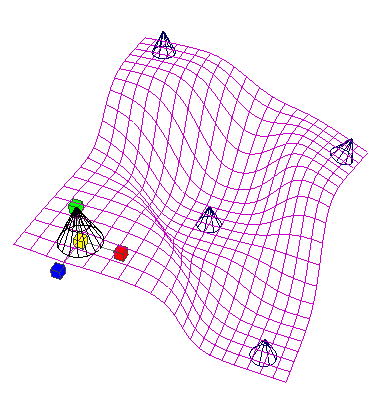
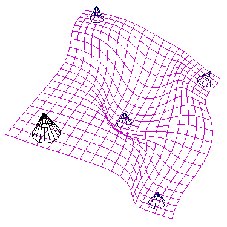
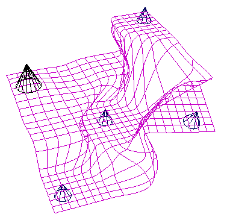

使用低分辨率球体对高分辨率球体进行变形
在该简短示例中，将使用低分辨率球体对高分辨率球体进行变形。
创建高分辨率球体
- 使用默认选项创建 NURBS 球体，但是要将“分段数”(Sections)设定为 40，将“跨度数”(Spans)设定为 20。
创建低分辨率球体
- 使用默认选项创建 NURBS 球体，但是要将“半径”(Radius)设定为 3。
低分辨率球体环绕高分辨率球体，后者的分辨率是低分辨率球体的 5 倍。

创建包裹变形器
- 先选择高分辨率球体，然后选择低分辨率球体。
- 选择“变形 > (创建)包裹”(Deform > (Create) Wrap)。
低分辨率球体现在是包裹影响对象。若要了解有关创建包裹变形器的详细信息，请参见创建包裹变形器。
另请参见包裹选项。
创建包裹变形效果
- 选择低分辨率球体的一些 CV 并移动它们。

高分辨率球体将变形以响应另一球体的 CV 更改。
- 切换到对象选择模式，同时保持低分辨率球体处于选定状态。
在“通道盒”(Channel Box)中，注意球体的两个新通道：“衰减”(Dropoff)和“包裹采样”(Wrap Samples)。
- 将“衰减”(Dropoff)设定为 20。

变形变得更明显。
如果希望进一步尝试使用“衰减”(Dropoff)和“包裹采样”(Wrap Samples)，请参见编辑 NURBS 包裹影响对象通道。
创建平面
- 使用所有默认选项创建 NURBS 平面，但是要将“宽度”设定为 20，将“长度”设定为 20，将“U 面片”设定为 20，“V 面片”设定为 20。
创建圆锥体
- 使用所有默认选项创建 5 个 NURBS 圆锥体。将它们在平面上按以下方式排列：

- 将所有圆锥体组合在一起。
创建包裹变形器
- 选择平面，然后选择圆锥体组。
- 选择“变形 > (创建)包裹”(Deform > (Create) Wrap)。另请参见包裹选项。
通过移动圆锥体对平面进行变形
- 移动、旋转或缩放圆锥体以对平面进行变形。

只需通过操纵圆锥体即可创建各种变形效果。
编辑变形效果
- 尝试使用每个圆锥体的“衰减”(Dropoff)通道。

有关“衰减”(Dropoff)和“包裹采样”(Wrap Samples)通道的详细信息，请参见编辑 NURBS 包裹影响对象通道。
- 在“通道盒”(Channel Box)中，注意包裹变形器节点 (wrap1) 在圆锥体的“输出”和平面的“输入”中列出。选择包裹变形器节点。尝试使用 wrap1 的“权重阈值”(Weight Threshold)通道，该通道可提供更尖锐或更平滑的变形效果。

有关包裹变形器通道的详细信息，请参见包裹。
请注意，您还可以移动平面，使其远离或进入圆锥体的影响范围。可以创建动画，让平面在接近圆锥体时经历变形。